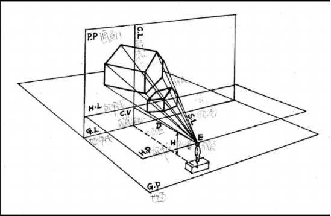

一、 CSS背景渐变效果
背景渐变使用的 CSS 属性是 background-image，这个属性可以同时使用渐变和引用图片，只要先写渐变再引用图片，并用逗号隔开就好。
CSS背景渐变主要有两种方式:线性渐变、径向(放射性)渐变。
线性渐变
从一点向另一点进行渐变，属性值 linear-gradient(渐变方向,颜色,颜色....)
例如当前页面的背景属性是: background-image:linear-gradient(to bottom,rgb(0,0,0),rgba(206, 8, 8,0.96) 199%);
其中括号内的属性值代表背景的一些参数，第一个是渐变方向，可以用英文字母也可以用角度（例如 45deg 代表45度）。第二个和第三个都是颜色，渐变颜
色可以有很多个，每个颜色后可以设置百分数、像素来设定其所占比例，若不设置则默认平均分配。
分配颜色空间的规则是，该百分数或像素确定其前方所有颜色总共所占空间的大小，如: (green,red 25px,blue,yellow 50px);
第一个 25px 确定的是 green、red 一共所占空间的大小，最后的 50px 确定的是所有颜色所占空间的大小。
线性渐变前还可以加一个重复前缀 repeating，这样当渐变不足以填充空间时就会进行重复渐变。如下图:
径向渐变
从一点向四周辐射的渐变方式，即画圆，属性值 radial-gradient(形状半径及方位,颜色,颜色....)
例如页面最上方的轮回眼，其眼白部分就是应用径向渐变的样式，代码是:
background-image:repeating-radial-gradient(circle 73px at center,gray,black);
第一个参数的 circle 指定形状，有两种,默认为椭圆。第一个参数的 73px 指定的是圆的半径大小。第一个参数的 at center 指定的是渐变的起始位置，
这里中心点。第二、三个参数是颜色。最后，径向渐变也可以重复，上例就加了前缀 repeating。
二、CSS 边框图片属性
边框图片不是边框，它首先是背景图片，然后是专门做边框的背景图片，它位于内容区，CSS 边框图片属性将一个背景图片做出边框的效果。
边框图片将一张图片用四条基准线划分为九块区域处理，就像九宫格一样（下面就拿它做比喻），下面是边框图片的各个属性，共 6 个:
| 属性 | 功能 | 属性值 |
|---|
| border-image-source | 引入边框图片到该元素 | url(图片路径) |
| border-image-slice | 将原图片切割成九块区域 | 纯数字、百分比、fill |
| border-image-width | 规定边框图片显示时各基准线的位置 | 像素 |
| border-image-repeat | 设置九宫格每条边中间区域的显示方式 | stretch、repeat、round、space |
| border-image-outset | 设置各边向外扩张的长度 | 像素 |
| border-image | 简写形式 | 定义顺序是 source slice/width/outset repeat |
border-image-slice
引入图片就不讨论了，slice 用来切割原图片，以供其它属性进行变换，切割的原理是设定四条基准线的位置，下面是两个示意图:
第一个就是现在这个元素的边框图片的原图片，第二个是对原图片进行尺寸测量的示意图，这个测量可以借助图像编辑软件完成。
根据测量，用 slice 设置切割原图片的基准线的位置:
border-image-slice:27;
上边这行实现了对原图进行像第二张图那样的切割，slice 的属性值是纯数字，因为它的默认单位就是 px，还有就是百分比。
边框图片属性是专为做边框而设计的，所以默认剔除掉九宫格正中间的部分，如果不喜欢这样，slice 有一个属性值 fill，它的作用是不剔除图片中间的部
分，所以上边的代码就变成: border-image-slice:27 fill;
border-image-width
切割是一回事，显示是另一回事，但二者的原理是相同的，用 slice 切割好原图后，用 width 确定显示时四条基准线的位置:
border-image-width:20px;
这样就能呈现出下面的效果:
可以发现，每条边中间的区域被拉伸了，原因是这个元素的宽高是 100px，四条基准线分别距各个方向 20px，所以中间区域长为 60px，自然就会拉伸。中
间区域的显示，由 repeat 属性处理。
border-image-repeat
repeat 属性决定每条边中间部分的显示方式，有四个属性值:stretch、repeat、round、space，其中经常使用的是 repeat、round
stretch: 拉伸，将中间区域拉伸到规定尺寸，默认值。
repeat: 平铺且拉伸，具体处理是，对上下两边在垂直方向拉伸在水平方向上重复平铺，左右两边是在垂直方向重复平铺在水平方向上拉伸。
round: 与 repeat 大体上一样，唯一的区别是当剩余的空间不能以整数个区域显示中间部分时，它会对中间部分的每个区域进行伸缩，使其都能正常显示。
repeat 和 round 的区别展示:
第一个是 repeat，第二个是 round，整体的宽高是 88px，可以看出，由于空间不足以容纳整数
个区域，前者的区域显示不完整，而后者对每个区域进行了拉伸使之刚好填满。那么到底是拉伸还是压缩？这需要计算，总的宽或高 % 单个区域的宽或高，判
断余数的大小，若小于单个区域的一半就压缩，大于单个区域的一半就拉伸。
上面规定中间区域的代码分别是:
border-image-repeat:repeat;
border-image-repeat:round;
border-image-outset
边框图片最终是要作为边框的，所以不能显示在内容区，outset 属性使边框图片整体向外扩张一定的长度，比如各个方向分别扩张 20px:
border-image-outset:20px;
最后有一点要强调，边框图片和边框不能一起用，否则只显示边框（设置边框为透明也不行）。
以上代码最终可简写为: border-image:url(../图片/边框图片素材.PNG) 27 fill/20px/20px round;
三、CSS变形效果
CSS3 变形（变换）效果分 2D 和 3D 两种，先说 2D。2D 变形主要使用 transform、transform-origin 这两个属性。
2D 变形
2D 变形是基于直角坐标系的，x 轴正方向为右，y 轴正方向为下。
| 属性 | 属性值 | 对属性值的描述 |
|---|
| transform | none、translate、scale、rotate、skew、matrix | 依次是无、位移、缩放、旋转、倾斜、自定义变换 |
| transform-origin | left、center、right、top、bottom、像素、百分数 | 两个参数，依次是 x、y 轴 |
transform
6 个属性值: none、translate、scale、rotate、skew、matrix，其中位移、缩放、倾斜可在属性名后加 X 或 Y 表示单独变换一个轴。
translate: 使用格式 transform(x 偏移量,y 偏移量)，单位是像素或百分数。
scale: 使用格式 scale(放缩倍数)，这会同时放缩 x、y 轴，单独放缩用 scaleX、scaleY。单位是像素或百分数。
rotate: 旋转是以 x，y 轴的交点为基准的，单位是角度（deg），范围是正负 0 ~ 360 deg。
skew:使用格式 skew(角度,角度)，在 x，y 轴的方向上倾斜。也可以单独倾斜一条轴，倾斜可以创造出一点立体效果。
matrix:
使用格式 matrix(a,b,c,d,e,f)，矩阵计算变换，上述的几种变换本质上都是用 matrix 这个属性值实现的，只是换了个名字，所以 matrix 是变换
的根本，换句话说，理解 transform 中的 matrix 矩阵方法有利于透彻理解 CSS3 的 transform 属性。
矩阵计算比较复杂，详情看这篇 CSDN 博客: https://blog.csdn.net/ruangong1203/article/details/54586051
这些属性值可以都写在一行上，用空格隔开就好。
transform-origin
origin 用来改变 x、y 轴的位置，默认时 x、y 轴交点是元素的中心。
从固定值来说，x 轴有 top、center、bottom 三个属性值，y 轴有 left、center、right 三个值。
也可以使用像素和百分数，使用格式是:
transform-origin: 值 值;
第一个值指定 x 轴的位置，第二个指定 y 轴的位置，如果用像素，左上角代表 x、y 轴的起点，随着值增大，x 向右，y 向下。
下面是一个运用纯 CSS 2D 变换的动画例子，点击色块触发效果:
3D 变形
3D 变形有三个坐标轴，加了个正方向垂直屏幕向外的 z 轴，并且其是基于透视原理的，所有属性值都要配合 CSS 3D 设置视点的属性才能展示出效果。
| 属性 | 属性值 | 描述 |
|---|
| transform | translate3d(x,y,z) | 3D 平移，可以单独设置，如 translate3dZ(z)，下边的也一样 |
| scale3d(x,y,z) | 3D 缩放 |
| rotate3d(x,y,z,a) | 3D 旋转，单独设置时去掉后缀 3d |
| perspective(长度值) | 确定视点距坐标原点的距离 |
| matrix3d(很多值) | 3D 矩阵变换 |
| transform-style | flat、preserve-3d | 设定子元素的变换方式，允许进行 3d 变换，可继承 |
| perspective | none、长度值 | 设置视点的位置，并以视锥中的形式展示元素 |
| perspective-origin | 长度值 | 确定 3D 变换坐标原点的位置，默认是元素中心，属性值有关键字、长度值、百分比 |
透视原理
要理解CSS 3D变换，首先要稍微了解下视物时的透视原理，这是绘画领域的内容，但被应用到了 CSS 3D 里，用视点、物体、投影来描述：

图中，人的位置就是视点，物体被观察（3D 变换中的元素），视线在平面上的点组成了一个投影。
视锥：视点与无数条视线构成的圆锥体。
视距：视点到坐标原点的垂直距离。
设置视点的位置要分别设置坐标原点、视距
设置视距要用到 perspective 属性或 transform 的 perspective 属性值。
两者的默认值为 none，即没有视点，展示效果与 2D 相同。此外，只能以长度值作为属性值，长度值就是视距。
perspective 属性是为一个元素的所有直系子元素（对本身无效）设置一个共同的视距，而 transform 的 perspective 属性值是为单个元素设置视
距（即一个元素一个视点），也就是说前者针对多个元素使用，而后者针对单个元素使用。
perspective-origin 确定坐标原点在元素中的 x、y 轴坐标，默认是元素中心。如：
perspective:200px;
perspective-origin:100px 100px;
含义是视点位于元素 x，y 轴 100px 100px 点距屏幕 200px 处。
“视点”这个属性是不可继承的，即只对该元素的直系子元素或元素本身起作用，多个元素有一个共同的视点时，外层的父元素被称为“舞台元素”，这时由于
该元素的所有直系子元素都只有一个共同的视点，因此即便各个子元素的变换属性相同，在不同位置也会呈现出不同的变换效果。
translate3d
3D 平移，三个属性值，也可以单独设置每个坐标轴。下面是个示例：
看起来似乎没有什么变化，但其实这张图片被变相的放大了，因为视物时，离得近的物体看起来更大，这张图的 CSS 代码如下：
transform:perspective(1000px) translate3d(0px,0px,100px);
margin:30px 80px 30px 50px;
视点位于元素中心距屏幕 1000px 处（下面的例子都一样），而图片 z 轴的平移坐标是 100px（0px 时是原尺寸），所以图片看起来被放大了。要注意，
当元素的 z 轴坐标大于视点时，就看不到元素了。
rotate3d
3D 旋转，属性值是角度，格式：rotateed(x,y,z,角度)
要注意的是，x、y、z 都只有两个可能的值 1 或 0，1 代表打开，0 代表关闭该方向上的旋转。所以该格式只能对各个方向进行统一旋转，要设置各个坐
标轴上的，用以下格式：
rptateX(角度)、rptateY(角度)、rptateZ(角度)
例子（点击触发旋转）:
图片代码如下:
transform:perspective(1000px) rotate3d(0,1,0,60deg)
3D 旋转的 z 轴其实和 2D 旋转是一样的。
scale3d
3D 缩放，三个属性值，一样可以单独设置每个坐标，与 2D 缩放不同，3D 缩放还要配合 3D 旋转才行，不然效果与 2D 缩放无异。示例:
图片代码如下：
transform:perspective(1000px) scale3d(1,0.7,0.7) rotate3d(0,1,0,45deg);
x、y 轴与 2D 时是一样的，而使用 rotate3d 将元素倾斜后，元素在 z 轴上就具有了一定的长度，这时就可以在 z 轴上缩放元素的长度。
最后，放一个应用纯 CSS 3D 变换的综合例子（若图片显示不完整，按两下F12）：
采用元素内联样式，代码如下:
<div style="perspective:1000px;">
<img src="../图片/CSS3D变换例子3.png" style="width:22%; transform:translate3d(90px,45px,-20px) rotate3d(0,1,0,80deg);">
<img src="../图片/CSS3D变换示例1.jpg" style="width:22%; transform:translate3d(180px,-20px,300px);">
<img src="../图片/CSS3D变换例子4.jpg" style="width:22%; transform:translate3d(-142px,130px,200px);">
<img src="../图片/CSS3D变换示例2.jpg" style="width:22%; transform:translate3d(-90px,37px,110px) rotate3d(0,1,0,-260deg);">
</div>